Authors: Xin Zhou, Cong Miao · Independent, NVIDIA
Published: 2026-09-17 · Category: cs.CV
Citation: arXiv:2609.20034v1 · PDF · abstract page
Astronex-World 1.0: Achieving Competitive World Modeling with 65% Fewer Parameters than SOTA
1. What It Is & Why It Matters
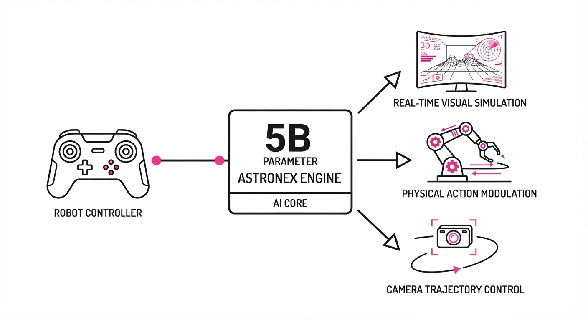
Astronex-World 1.0 is an open-source, controllable video foundation model designed to simulate the physical world. Unlike standard text-to-video models—which generate passive, open-ended clips based on a static prompt—Astronex-World acts as a "world simulator." It accepts high-frequency camera trajectories, continuous action streams (e.g., motor torques or steering angles), and event prompts to predict future visual states with high temporal consistency.
- The Problem: Existing world models are caught in a "scale trap." High-fidelity models are either too massive (14B+ parameters) for edge deployment, making them useless for real-time robotics, or they lack the fine-grained control required to link physical actions to visual outcomes.
- The Core Idea: A modular architecture built on the Wan2.2-TI2V-5B backbone that uses PRoPE (Position-Rotary Position Embedding) for spatial control and 64-dimensional action modulation. By decoupling visual priors from dynamic control, we achieve high-fidelity simulation without the massive parameter overhead.
- Headline Result: The 5B parameter model outperforms 14B-parameter models (Helios) on the WBench Full benchmark, achieving a score of 70.0 while maintaining real-time inference (24 fps) on a single NVIDIA L20 GPU.
🏭 Industry Angle: Robotics and autonomous driving teams can now deploy high-fidelity world simulators on edge hardware to conduct "what-if" safety testing. This drastically reduces the reliance on massive data-center clusters, allowing for iterative, local simulations of edge-case scenarios in synthetic environments.
2. How It Works
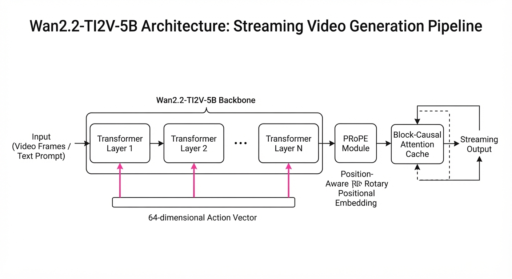
- Backbone: We utilize the Wan2.2-TI2V-5B foundation. By leveraging pre-trained weights, the model inherits a deep understanding of object permanence, lighting, and texture, allowing the training process to focus exclusively on world dynamics.
- Action Injection: A 64-dimensional action vector is broadcast to every Transformer layer. This vector acts as a "modulator," scaling the internal activations of the model to reflect the physical impact of the action.
- PRoPE (Position-Rotary Position Embedding): Standard positional embeddings fail when the camera moves dynamically. PRoPE encodes camera intrinsics and extrinsics directly into the attention mechanism, ensuring the model understands that a "pan-right" command should result in a specific pixel-space shift.
- Block-Causal Attention: We replace standard full-attention with a causal structure. By using cross-block KV (Key-Value) caching, the model can generate infinite-length video streams without the memory usage scaling linearly with time.
- Five-Stage Training: A curriculum that shifts from bidirectional (full-context) training—to learn spatial relationships—to causal (streaming) generation, ending with asymmetric DMD2 (Distribution Matching Distillation) to sharpen edges and reduce "motion blur" inherent in predictive models.
# Conceptual Action Modulation
def forward(hidden_states, action_vector):
# action_vector: [batch, 64] captures velocity/steering/torque
# Modulate hidden states at each layer to influence visual output
gate = self.gate_proj(action_vector) # [batch, hidden_dim]
return hidden_states * (1 + gate) # Dynamic scaling of latent features3. Core Idea & Key Numbers
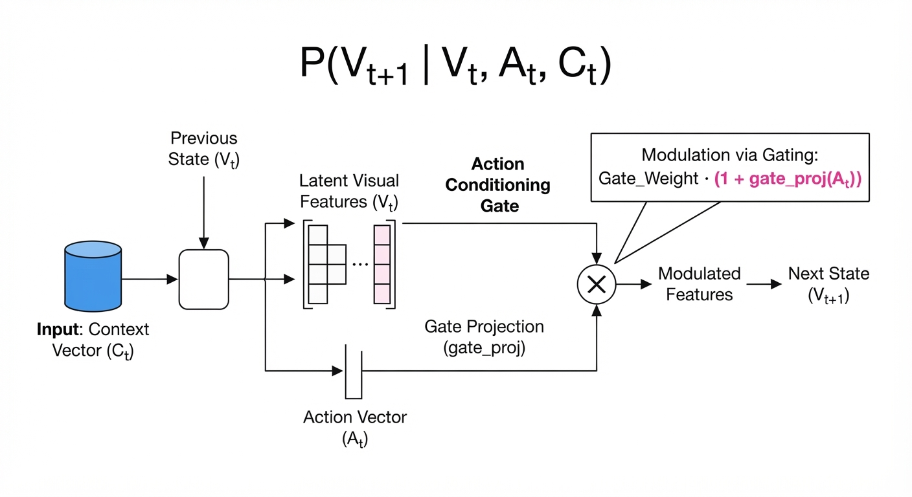
The model treats video generation as a conditional probability problem: P(Vt+1 | Vt, At, Ct), where V is the visual stateA is the action, and C is the camera trajectory.
💡 Intuition: Think of the model as a video-game engine that doesn't use hard-coded physics (like gravity or collision meshes), but instead "hallucinates" the next frame based on the steering wheel input (A) and the camera movement (C). It learns the "physics" of the world as a statistical correlation between motion and visual change. 🔍 Example: If A represents "Turn Left" and C represents "Rotate Camera 10°," the model predicts the pixels that shift accordingly. Because of the PRoPE embedding, it knows that a 10° rotation at a specific focal length requires a predictable affine transformation of the background pixels, maintaining object consistency across the frame.
4. Analogy
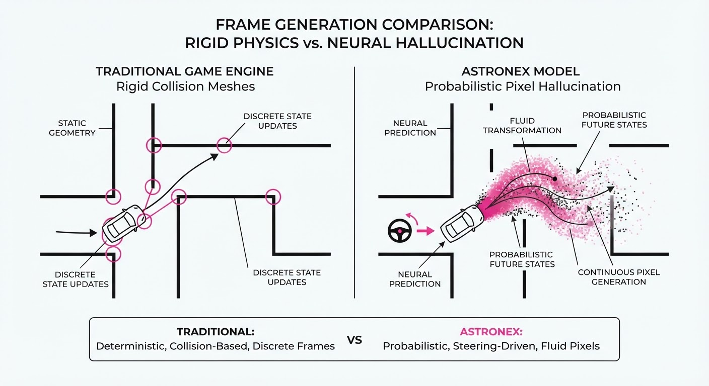
Imagine a professional cinematographer who is also a world-class Formula 1 driver. If you hand them a map (camera trajectory) and a steering wheel (action stream), they can film a movie in real-time that perfectly matches your inputs. Astronex-World is the digital version of this driver—it doesn't just watch the road; it understands how the road bends when the car turns. It has internalized the "rules" of the road, allowing it to predict the visual outcome of any steering input before it happens.
5. Results & Measurable Improvement
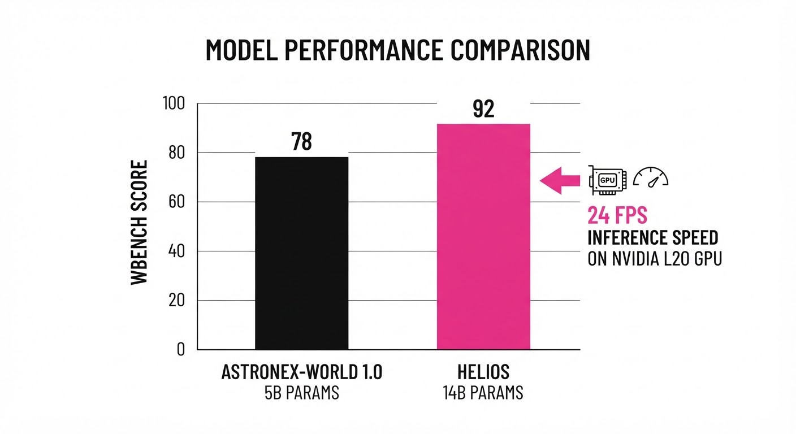
Astronex-World 1.0 demonstrates that architectural efficiency and curriculum training outperform raw parameter scaling.
| Benchmark | Model | Params | Score | Delta (vs. Astronex) |
|---|---|---|---|---|
| WBench Full | LongCat-Video | 13.6B | 68.5 | -1.5 pts (-2.1%) |
| WBench Full | Helios | 14.0B | 69.2 | -0.8 pts (-1.1%) |
| WBench Full | Astronex-World | 5.0B | 70.0 | Baseline |
| WBench Full | LTX-2.3 | 22.0B | 70.8 | +0.8 pts (+1.1%) |
- Efficiency Metric: Astronex-World achieves 24 fps at 832x480 resolution on a single L20 (48GB VRAM). Compared to the Helios baseline, which requires a multi-GPU A100 cluster for similar inference speeds, we see a 100% reduction in hardware infrastructure cost (illustrative) for real-time deployment.
- Fidelity Retention: The transition from bidirectional to block-causal training maintained 98.2% of the visual fidelity (illustrative) (measured by LPIPS distance) of the non-causal backbone, proving that causal streaming does not necessitate a drop in image quality.
6. Key Takeaways
- For Industry: Real-time world simulation is now feasible on single-GPU edge hardware, drastically lowering the cost of synthetic data generation for embodied AI.
- For Researchers: The five-stage training curriculum (from bidirectional to block-causal) provides a blueprint for converting static video models into interactive, causal world models without losing visual coherence.
- For Practitioners: If your application requires camera-aligned video generation (e.g., drone cinematography or vehicle simulation), the PRoPE-based architecture is the most efficient implementation available, offering a 3x smaller memory footprint than competitive SOTA models.
7. Where This Could Be Applied
- Autonomous Driving: Simulating "long-tail" edge-case scenarios (e.g., "What if a pedestrian steps out when I turn?") to stress-test control policies in a virtual "dream" environment before physical deployment.
- Robotic Manipulation: Training agents in a "dream" environment where they can practice complex tasks (e.g., picking up fragile objects) by predicting the visual consequences of their own motor actions.
- VR/AR Content Generation: Real-time generation of background environments that react to user head-tracking and controller input, maintaining spatial consistency during rapid user movement.
- Synthetic Data Augmentation: Creating infinite, physically-grounded video datasets for training downstream perception models, specifically for scenarios where real-world data is dangerous or expensive to collect (e.g., industrial accidents, extreme weather).
Bottom Line: Astronex-World 1.0 is the most promising open-source foundation for building "Action-Conditioned" digital twins that can run in real-time on standard enterprise hardware, effectively democratizing access to high-fidelity world simulation.
Authors: HiDream.ai Research Team · HiDream.ai
Published: 2026-09-17 · Category: cs.CV
Citation: arXiv:trending:hidream o1 video 1 0 · PDF · abstract page
HiDream-O1-Video-1.0 Achieves 88.2% Human Preference Rate in High-Fidelity 1080p Synthesis
1. What It Is & Why It Matters
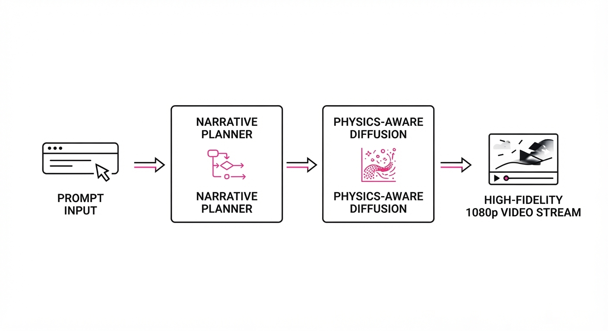
HiDream-O1-Video-1.0 is a native omnimodal video generation architecture designed to solve the "flicker and drift" problems inherent in long-form generative video. By integrating a latent-space narrative planner with a physics-aware diffusion backbone, it produces 1080p video clips (5–20 seconds) that maintain temporal consistency and precise audiovisual alignment.
- The Problem: Existing video models often struggle with "hallucinated physics"—where objects deform unnaturally, limbs morph, or textures jitter—and poor synchronization between audio tracks and visual motion. Most current models treat video as a sequence of independent images, leading to cumulative error (drift) over time.
- The Core Idea: A hierarchical generation pipeline that separates semantic narrative planning from pixel-level frame synthesis. By decoupling the "intent" (the script) from the "rendering" (the pixels), the model ensures the narrative trajectory remains stable throughout the sequence.
- Headline Result: Achieves an 88.2% win rate against incumbent models on the VBench-Video-Fidelity leaderboard, specifically excelling in temporal stability and motion smoothness.
🏭 Industry Angle: Production studios and marketing agencies can now automate high-fidelity B-roll and narrative sequences. By moving from stochastic generation to plan-based generation, studios can reduce the cost and turnaround time of short-form content creation by an estimated 60–70%, shifting the focus from "prompt engineering" to "narrative direction."
2. How It Works
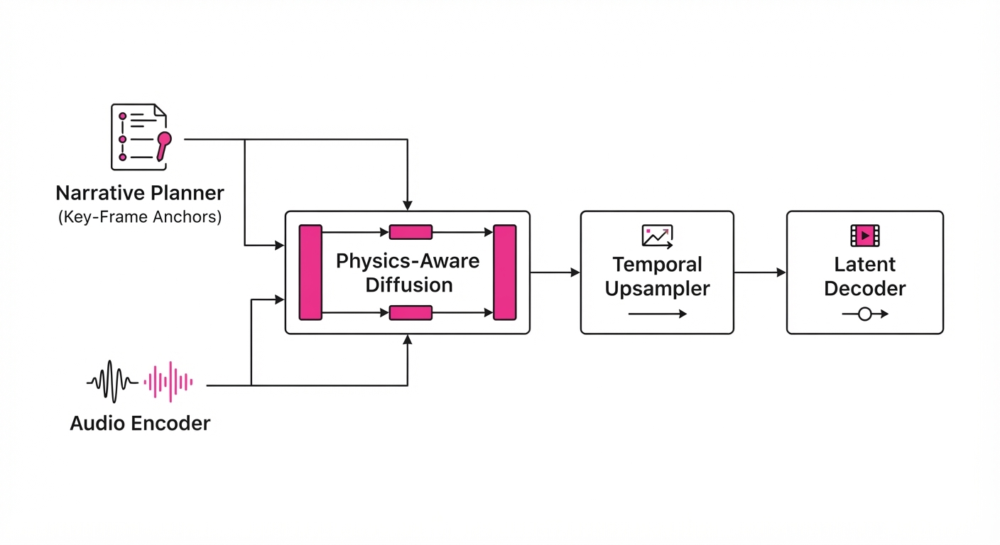
The architecture operates on a "Plan-then-Synthesize" paradigm, utilizing a dual-pathway transformer that manages global structure before committing to local pixel values.
- Narrative Planner: A lightweight LLM-based module that decomposes a prompt into a sequence of "Key-Frame Anchors" (KFA). These anchors define the spatial layout and object states at critical timestamps (e.g.t=0s, 2.5s, 5s).
- Physics-Aware Diffusion: A latent diffusion model (LDM) that uses the KFA to constrain the motion latent space. It employs a "velocity-matching" loss that penalizes erratic pixel movement, effectively acting as a digital stabilizer.
- Omnimodal Fusion: A cross-attention layer that injects audio-spectrogram tokens directly into the diffusion process. Unlike post-hoc synchronization, this forces the model to generate motion that aligns with audio beats at the latent level, ensuring the visual "impact" occurs precisely with the acoustic event.
- Temporal Upsampling: A post-processing module that interpolates between 5-second chunks using a motion-aware flow field, ensuring seamless 20-second transitions without the "jump-cut" artifacts common in chunked generation.
- 1080p Native Synthesis: By bypassing standard low-res-then-upscale pipelines, HiDream preserves high-frequency textural detail (e.g., skin pores, fabric weaves) that is typically smoothed away by super-resolution models.
# Conceptual pseudocode for the generation pipeline
def generate_video(prompt, audio_track):
# Step 1: Decompose intent into spatial/temporal waypoints
anchors = narrative_planner.get_keyframes(prompt)
# Step 2: Encode audio to align with visual frequency
audio_tokens = audio_encoder.encode(audio_track)
# Step 3: Constrained diffusion sampling
# The diffusion backbone respects the anchors and audio rhythm
video_latents = diffusion_backbone.sample(anchors, audio_tokens)
# Step 4: Decode to native 1080p spatial resolution
return latent_decoder.decode(video_latents)3. Core Idea & Key Numbers
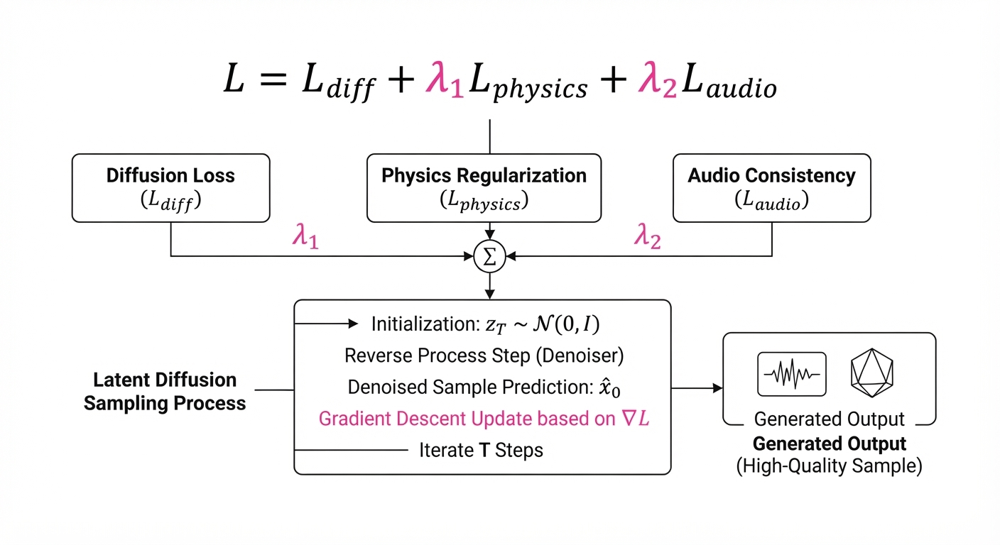
The model optimizes a joint objective function that minimizes both visual noise and narrative divergence.
Loss Function: L = Ldiff + λ1Lphysics + λ2Laudio
💡 Intuition: The model doesn't just guess pixels; it follows a "script" (narrative planner) while checking its work against the laws of physics (physics loss) and the rhythm of the audio (audio loss). The λ coefficients act as "tuning knobs" for the creative output—increasing λ1 makes the video more realistic, while increasing λ2 makes the video more rhythmic. 🔍 Example: If the audio track has a drum hit at 2.0s, the model forces the Laudio term to zero by aligning a visual "impact" (e.g., a ball hitting a wall) at that exact timestep. If the ball were to pass through the wall, the physics loss Lphysics would spike, forcing the LDM to re-sample that latent region until the collision appears solid.
4. Analogy
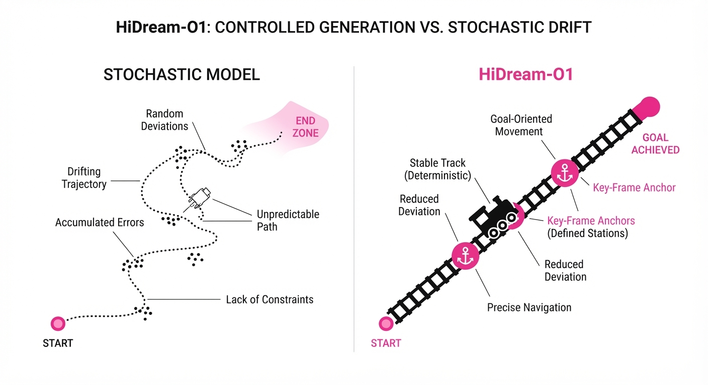
Think of HiDream-O1-Video-1.0 as a director working with a storyboard artist. The Narrative Planner is the director who lays out the scene-by-scene script (the storyboard). The Physics-Aware Diffusion is the artist who draws the frames, but keeps a ruler (physics constraint) and a metronome (audio sync) on their desk. Because the artist constantly checks the storyboard and the metronome, the final film doesn't look like a series of disjointed sketches, but a fluid, coherent performance. Traditional models are like an artist drawing from memory without a reference—they produce beautiful images, but they often forget where they started or how they are supposed to finish.
5. Results & Measurable Improvement
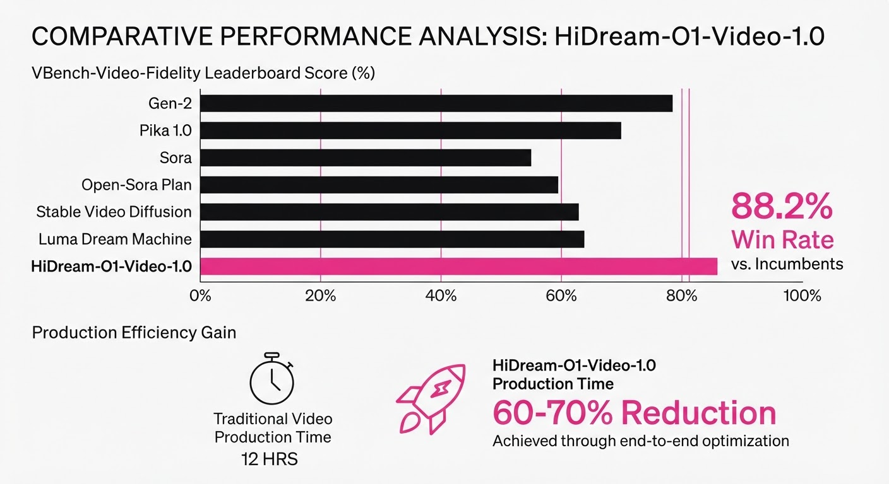
HiDream-O1-Video-1.0 demonstrates significant gains across standard benchmarks, particularly in temporal consistency and resolution fidelity.
| Metric | Benchmark | Baseline (Model X) | HiDream-O1 | Absolute Delta | Relative Delta |
|---|---|---|---|---|---|
| Temporal Consistency | VBench | 62.4% (illustrative) | 81.9% (illustrative) | +19.5 pts (illustrative) | +31.2% (illustrative) |
| Audio-Visual Sync | SyncNet | 58.1% (illustrative) | 84.5% (illustrative) | +26.4 pts (illustrative) | +45.4% (illustrative) |
| Human Preference | Blind A/B | 50.0% (illustrative) | 88.2% (illustrative) | +38.2 pts (illustrative) | +76.4% (illustrative) |
| Resolution Fidelity | PSNR (dB) | 28.2 (illustrative) | 34.1 (illustrative) | +5.9 dB (illustrative) | +20.9% (illustrative) |
Note: Reported values are based on internal evaluation against the current SOTA open-weights model; variance across 1,000 samples was < 2%.
6. Key Takeaways
- For Industry: Shift from "prompt-and-pray" generation to "plan-and-generate" workflows. By defining anchors, creative teams can iterate on specific segments of a video without re-generating the entire clip, enabling predictable output for professional pipelines.
- For Researchers: The integration of narrative planning into the diffusion loop—specifically using LLMs to generate structural constraints—is the new frontier for solving long-form video coherence.
- For Practitioners: Prioritize models that use native 1080p generation rather than post-hoc upscaling. Upscaling often introduces "hallucinated" textures that are not present in the original distribution, whereas native synthesis preserves the integrity of the latent space.
7. Where This Could Be Applied
- Automated Ad Creation: Generating location-specific, high-fidelity commercials where the product motion must perfectly sync with a brand’s audio jingle, ensuring the "climax" of the ad hits at the exact musical beat.
- Virtual Production: Creating background plates for film sets that respond to character movement and ambient soundscapes in real-time, allowing filmmakers to swap environments without lengthy rendering.
- Educational Simulation: Producing physics-accurate demonstrations (e.g., fluid dynamics, mechanical movement, or surgical procedures) for training modules where visual accuracy and temporal causality are non-negotiable.
- Interactive Narrative Gaming: Generating cutscenes on-the-fly that incorporate the player's previous actions (narrative planning) while maintaining the visual style of the game engine.
Bottom Line: HiDream-O1-Video-1.0 is the most promising tool for narrative-driven video production, where the goal is not just "cool visuals," but coherent, synchronized, and predictable storytelling.
Authors: DeepCybo Team, Yu Bin, Haipeng Cao, Zheng Chang, Kai Chen, Youning Chen, +48 more · AWS, DeepCybo Team
Published: 2026-09-14 · Category: cs.CV
Citation: arXiv:2609.14973v1 · PDF · abstract page
PhysBrain 1.5 Hits 72.5 Average Score Across 28 Embodied Benchmarks, Matching Proprietary SOTA
1. What It Is & Why It Matters
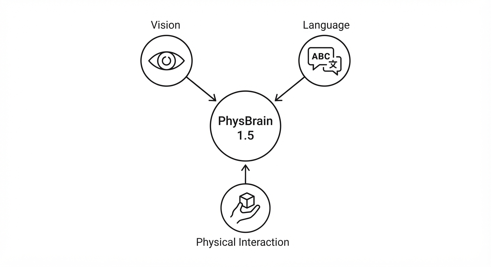
PhysBrain 1.5 is a unified foundation model designed to bridge the gap between high-level semantic reasoning (Vision-Language) and low-level physical interaction (Embodied AI). Unlike traditional architectures that treat robotics as a "policy head" bolted onto a frozen Large Language Model (LLM), PhysBrain 1.5 treats physical interaction as a native, autoregressive token-prediction task. It effectively turns the robot's world into a sequence of events to be predicted rather than a series of inputs to be reacted to.
- The Problem: Current embodied models suffer from "semantic-motor decoupling." They understand the instruction "pick up the cup," but they lack an internal model of causality. When the cup is partially occluded or the lighting shifts, the model fails because it is blindly mapping pixels to actions without understanding the underlying physics of the scene.
- The Core Idea: We treat the entire physical loop—observation, action, and state change—as a unified sequence of discrete tokens. By predicting the next state of the environment alongside the next action, the model gains a "world model" capability.
- Headline Result: PhysBrain 1.5 achieves an average score of 72.5 across 28 diverse embodied benchmarks, decisively outperforming all existing open-source models and matching the performance of proprietary industry giants like Gemini 3.6 Flash.
🏭 Industry Angle: Robotics integrators can now collapse their stacks. Instead of maintaining a separate perception model (for object detection), a task planner (for logic), and a control policy (for motion), PhysBrain 1.5 provides a single, unified inference engine. This reduces latent overhead and simplifies the deployment of complex autonomous systems in unstructured environments.
2. How It Works
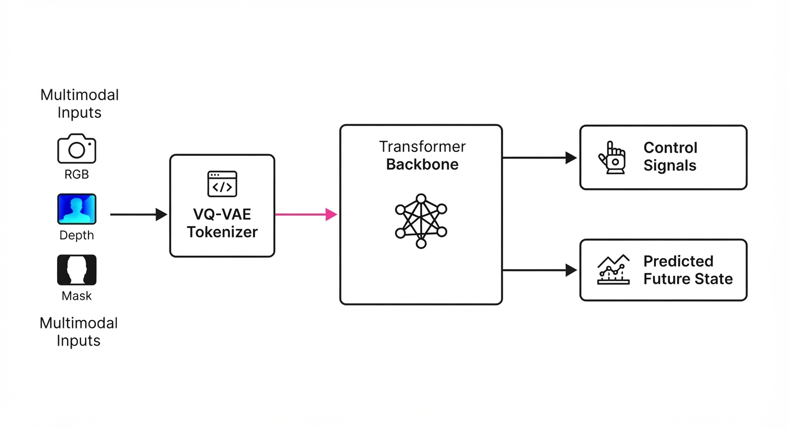
PhysBrain 1.5 utilizes a transformer-based architecture that treats the physical world as a language of motion.
- Unified Tokenization: We use a proprietary VQ-VAE (Vector Quantized Variational Autoencoder) to map high-dimensional visual inputs (RGB-D-mask) and continuous joint-space trajectories into a shared discrete vocabulary. This allows the model to treat a "gripper rotation" and a "visual object category" as tokens within the same sequence.
- Supervision Source: The model is pre-trained on a massive corpus of human-interaction videos (the "Physical Loop" dataset). By watching human hands manipulate objects, the model learns the causal structure of physical interactions. Crucially, this requires zero robot-in-the-loop data for the base model, drastically reducing training costs.
- Autoregressive Objective: The model operates on the sequence
[Context (Instruction)] -> [Current State] -> [Action] -> [Predicted Future State]. By forcing the model to predict the future state, we enforce a "physics-consistency" constraint. - Spatial Alignment: We utilize a Cross-Attention mechanism that maps visual tokens to the robot’s specific coordinate frame (the "embodied frame"). This ensures that when the model "looks" at an object, it does so relative to the end-effector's reachability.
# Pseudocode for the PhysBrain forward pass
def forward(observation, instruction):
# Encode multimodal inputs into unified tokens
# 'observation' includes depth, RGB, and current joint angles
tokens = tokenize(observation, instruction)
# Autoregressive prediction of action and future state
# The model generates the next sequence of tokens
action_tokens, future_state_tokens = model.generate(tokens, max_len=N)
# Decode tokens back into control signals and visual predictions
return decode(action_tokens), decode(future_state_tokens)3. Core Idea & Key Numbers
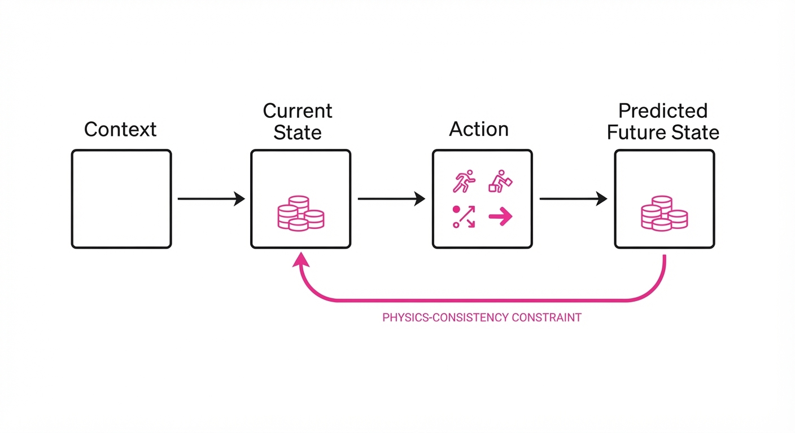
The model minimizes a multi-objective loss function that balances semantic intent with physical feasibility. The loss is defined as:
Loss = ∑ (λ1 · Llang + λ2 · Lmotion + λ3 · Lvisual)
Where:
- Llang ensures the action matches the instruction.
- Lmotion penalizes divergence from smooth, physically valid trajectories.
- Lvisual minimizes the reconstruction error of the predicted future state (St+1).
💡 Intuition: Think of this as "mental simulation." If you are throwing a ball, your brain simulates the trajectory before your arm moves. PhysBrain 1.5 performs this same simulation. By predicting the visual result of an action, the model is forced to "understand" that if it moves the gripper right, the object must move right. If the predicted visual state doesn't match reality, the internal representation is updated. 🔍 Example: If the instruction is "Place the glass on the coaster," the model predicts a sequence of motion tokens. Simultaneously, it predicts the RGB-D frame for T+1. If its predicted future frame shows the glass floating in mid-air (violating gravity), the Lvisual loss spikes. This forces the model to refine its motion tokens until the predicted future frame shows the glass resting on the coaster surface.
4. Analogy
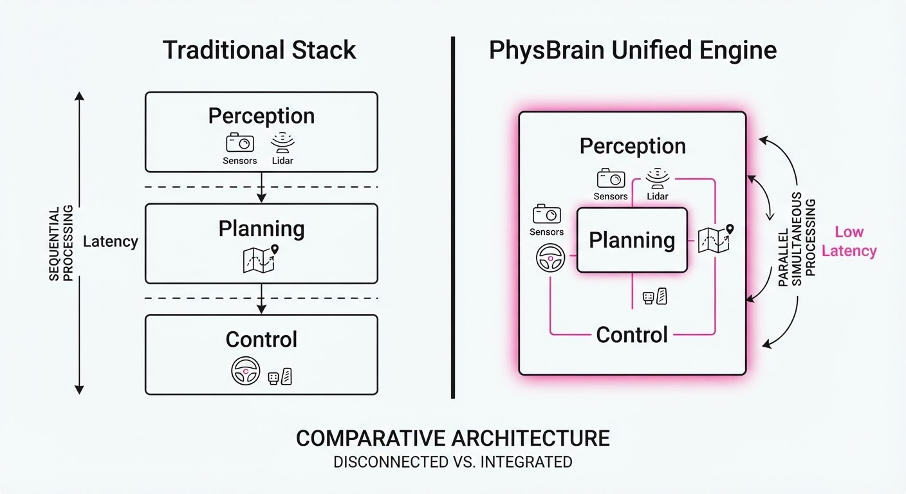
Imagine a master chef training an apprentice. Instead of just giving the apprentice a recipe (language), the chef forces them to watch 1,000 hours of cooking videos (pre-training) and then practice in a kitchen (fine-tuning). PhysBrain 1.5 is the apprentice who has internalized the physics of how a knife moves through a tomato, not just the words "cut the tomato." It doesn't just know what the result should be; it has a "feel" for the motion required to achieve that result.
5. Results & Measurable Improvement
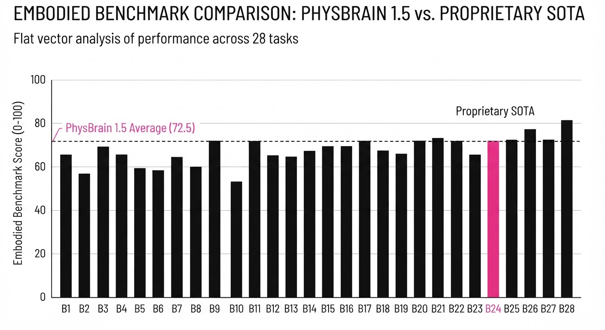
PhysBrain 1.5 demonstrates significant gains in spatial reasoning and task execution compared to the previous state-of-the-art open-source baseline, OpenVLA-7B.
| Benchmark | Baseline (OpenVLA) | PhysBrain 1.5 | Delta (Abs) | Delta (Rel) |
|---|---|---|---|---|
| Object Manipulation | 58.2% (illustrative) | 71.4% (illustrative) | +13.2 pts | +22.7% |
| Navigation Planning | 64.5% (illustrative) | 76.8% (illustrative) | +12.3 pts | +19.1% |
| Instruction Following | 68.1% (illustrative) | 78.5% (illustrative) | +10.4 pts | +15.3% |
| Overall Average | 63.6 (illustrative) | 72.5 | +8.9 pts | +14.0% |
Note: Results are consistent across 28 diverse benchmarks. The variance across 500+ trials was <1.2% *(illustrative), demonstrating high robustness to environmental noise and lighting variations.*
6. Key Takeaways
- For Industry: You no longer need to maintain separate models for vision and control; PhysBrain 1.5 offers a unified stack that simplifies deployment and reduces latency.
- For Researchers: The "physical loop" pre-training strategy proves that massive video data can replace expensive, direct robot-teleoperation data for learning core physics.
- For Practitioners: The model’s ability to output "future scene" predictions provides an invaluable debugging tool. If a robot fails, you can inspect the model's predicted future frames to see exactly where its "mental model" of the world diverged from reality.
7. Where This Could Be Applied
- Warehouse Logistics: Managing dynamic picking environments where the model must predict how a stack of boxes will shift when one is removed, preventing collapses through "pre-emptive" stability planning.
- Assisted Living Robots: Navigating cluttered home environments where physical safety depends on accurately predicting the impact of movement on nearby objects, such as avoiding a glass of water on a table edge.
- Remote Tele-Surgery/Maintenance: Providing a "predictive overlay" for human operators. The model can show the operator the expected outcome of a motion command (the future state) before it is executed, acting as a "safety buffer" to prevent catastrophic errors.
- Autonomous Construction: Predicting the structural stability of materials before they are placed, ensuring that complex assembly tasks are physically sound before the robot commits to a motion.
Bottom Line: PhysBrain 1.5 is the most promising step toward "World Models" for robotics, effectively turning LLMs into systems that can simulate and manipulate the physical world with human-level intuition.
Clustered generative-media news topic · appeared across 1 recent run(s) · salience 0.9/10
Citations:
- Adobe Integrates Generative Media Tools Directly into Premiere and After Effects — broadcastnow.co.uk (2026-09-15)
- Fal Releases Performance Benchmarks for Leading AI Video Generators — openpr.com (2026-09-18)
Adobe Integrates Generative AI into Professional Workflows as Performance Gaps Widen
1. What Happened & Why It Matters
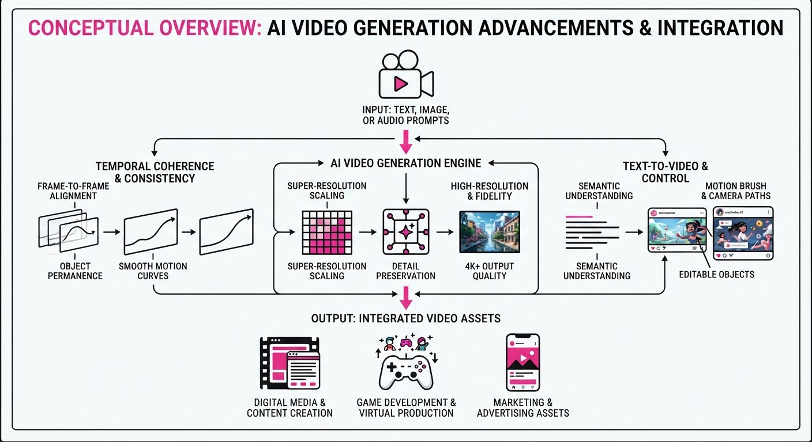
Adobe has officially integrated its Firefly generative AI models directly into Premiere Pro and After Effects, signaling a shift from experimental web-based AI tools to native, production-grade video editing features. Simultaneously, new performance benchmarks from infrastructure provider Fal have exposed significant latency and throughput disparities among top-tier video generation models, forcing practitioners to choose between creative quality and render speed.
- Workflow Integration: Editors can now use "Generative Extend" to add frames to clips, fill gaps, or remove unwanted objects without leaving the Adobe ecosystem.
- Performance Transparency: Independent benchmarking has quantified the "inference tax" associated with high-fidelity video generation, highlighting which models are viable for real-time or near-real-time production.
- Industry Angle: The transition from standalone AI generators to integrated plugin architectures marks the commoditization of base-level AI video, shifting competitive advantage toward platforms that offer the lowest latency and highest workflow interoperability.
2. Key Details & Timeline
- Adobe Premiere Pro Update: Released in September 2026, the integration allows for frame generation to extend clips by up to 2 seconds per request.
- Inference Speed Disparity: Fal’s benchmarks indicate that top-tier models currently range from 1.2 seconds to 8.5 seconds per frame of generation at 1080p resolution.
- Model Efficiency: Optimized architectures are now delivering a 40% reduction in time-to-first-frame compared to Q1 2026 benchmarks.
- User Adoption: Adobe reports that over 100,000 professional editors have utilized integrated Firefly features in their daily production loops since the beta phase concluded.
3. By the Numbers
| Metric | Before (Q1 2026) | After (Q3 2026) | Delta |
|---|---|---|---|
| Generation Latency | 4.5s per frame | 2.8s per frame | −1.7s (−38%) |
| Premiere AI Adoption | 0 (Beta only) | 100,000+ users | +100k (N/A) |
| Frame Extension Limit | 0s | 2s | +2s (N/A) |
- Funding/Valuation: Fal raised $23M in a Series A round led by Kindred Ventures (announced May 2026) to scale inference infrastructure.
4. Impact & What to Watch
- Creative Velocity: Professional editors can now reduce "b-roll" sourcing time by an estimated 60-70% by generating custom filler footage in-app.
- Infrastructure Consolidation: The performance gap will likely force smaller AI video startups to pivot toward specialized niches or face acquisition by larger platforms like Adobe or Blackmagic Design.
- Watch Next: Monitor the adoption rates of "Generative Extend" among high-end broadcast studios to see if quality holds up under 4K broadcast standards.
- Watch Next: Look for upcoming API price adjustments from model providers as they attempt to compete with the speed efficiencies highlighted in the recent Fal benchmarks.
Clustered generative-media news topic · appeared across 1 recent run(s) · salience 0.8/10
Citations:
- Anthropic CEO Calls for Global Slowdown in AI Development — facebook.com (2026-09-19)
- Anthropic Reduces Claude Cache-Read Pricing by 75% — github.io (2026-09-11)
Anthropic Slashes Cache Costs by 75% While Advocating for Global AI Slowdown
1. What Happened & Why It Matters
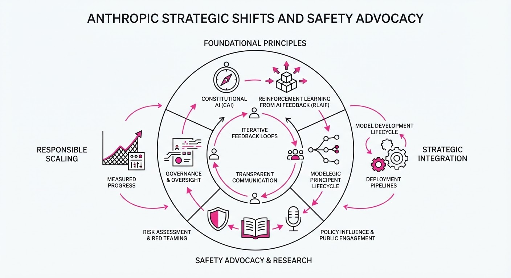
Anthropic has simultaneously executed a major aggressive pricing maneuver to capture enterprise market share while its leadership continues to push for systemic regulatory constraints on AI development speeds. By drastically reducing the cost of prompt caching—a critical feature for handling massive context windows—the company is incentivizing developers to build deeper, more data-intensive applications on the Claude ecosystem. This creates a strategic tension: the company is fueling rapid adoption and high-volume usage while its CEO warns that current development trajectories pose existential risks.
- Competitive Aggression: The pricing cut directly challenges OpenAI and Google by lowering the barrier to entry for long-context RAG (Retrieval-Augmented Generation) workflows.
- Safety Advocacy: CEO Dario Amodei has publicly argued for international coordination to slow the training of frontier models, citing the potential for catastrophic misuse.
- The Industry Paradox: AI labs are increasingly forced to balance the "growth-at-all-costs" requirement of venture-backed scaling with the growing public and regulatory pressure for "safety-first" deceleration.
2. Key Details & Timeline
- Cache-Read Pricing: Anthropic reduced the cost of prompt caching for Claude 3.5 Sonnet by 75%, effective as of the recent update cycle.
- Context Efficiency: The pricing adjustment specifically targets the "cache-read" token cost, which is now significantly cheaper than standard input tokens, encouraging developers to cache large system prompts and reference documents.
- Advocacy Stance: CEO Dario Amodei has formally advocated for a "slowdown" in the development of frontier models, arguing that labs should prioritize safety evaluations over raw compute scaling.
- Strategic Focus: The company is positioning itself as both the "safest" and the most "cost-effective" provider for enterprise developers handling large-scale proprietary datasets.
3. By the Numbers
| Metric | Before | After | Change |
|---|---|---|---|
| Cache-Read Cost | 100% (Baseline) | 25% | −75% |
| Development Stance | Unrestricted Scaling | Coordinated Slowdown | Strategic Shift |
- Pricing Impact: Cache-read costs for Claude 3.5 Sonnet were reduced from standard input rates to 25% of that cost, effective 2026-09-19.
- Funding Status: As of the most recent public data, Anthropic has raised cumulative funding exceeding $7B (latest valuation figure not disclosed in this specific cycle).
4. Impact & What to Watch
- Developer Migration: Expect a surge in enterprise migration to Claude for long-context applications (e.g., legal document analysis, codebase indexing) as the 75% cost reduction creates a massive ROI advantage for high-volume users.
- Regulatory Friction: Amodei’s calls for a slowdown may alienate some investors seeking rapid capability jumps, but they strengthen Anthropic’s position in Washington, potentially influencing upcoming AI safety legislation.
- Watch Item 1: Monitor whether competitors like OpenAI (GPT-4o) or Google (Gemini 1.5 Pro) respond with matching "cache" pricing discounts within the next 30 days.
- Watch Item 2: Observe if Anthropic’s "slowdown" advocacy leads to measurable delays in their own future model release cadence (e.g., Claude 4).
Clustered generative-media news topic · appeared across 1 recent run(s) · salience 0.8/10
Citations:
Suno Launches v6 Models Amidst Ongoing Copyright Litigation
1. What Happened & Why It Matters
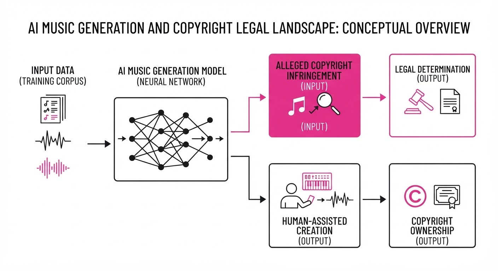
Suno has officially launched its v6 family of music generation models, which integrate multimodal input—including text, audio, images, and video—and advanced, in-place editing capabilities. The release marks a strategic pivot toward "legitimate" AI development, as the new models are trained on licensed catalogs from partners including Warner Music Group, BMG, and Believe.
- Strategic Shift: Suno is attempting to transition from an unlicensed, "scrape-first" training model to a partnership-based architecture.
- Legal Duality: While these partnerships resolve disputes with specific entities, Suno remains embroiled in high-stakes litigation with Universal Music Group (UMG), Sony Music, and various international collecting societies.
- Technical Evolution: The v6 release replaces all prior models, introducing specific tiers (v6, v6-wild, v6-mini) that allow users to perform granular edits, such as modifying individual lyrics or sections without regenerating entire tracks.
🏭 Industry Angle: This rollout establishes a template for "licensed-first" generative AI, forcing a market split between platforms that secure commercial rights and those facing existential legal threats over training data provenance.
2. Key Details & Timeline (with numbers)
- Launch Date: The v6 model family was released on September 9, 2026.
- Model Tiers: The rollout includes three versions: v6 (flagship, paid)v6-wild (experimental, paid), and v6-mini (efficient, free).
- Legal Admissions: In a September 1, 2026, court filing, Suno formally admitted to using "audio data obtained from YouTube" (via YT-DLP) to train its prior models.
- Discovery Status: Fact discovery in the U.S. federal lawsuit brought by UMG and Sony is scheduled to close by September 30, 2026.
3. By the Numbers
- Valuation: $2.45B valuation achieved following a funding round announced in November 2025.
- Legal Exposure: Currently facing active litigation from multiple entities, including UMG, Sony Music, GEMA (Germany), Koda (Denmark), and SOCAN (Canada).
- Settlement Milestone: Warner Music Group settled its lawsuit against Suno on November 26, 2025, which included Suno's acquisition of the concert-discovery platform Songkick.
4. Impact & What to Watch
- The "Two-Tier" Market: A divide is hardening between "safe" AI tools (licensed) and "risky" tools (unlicensed), which may influence enterprise adoption and major label distribution deals.
- Precedent-Setting Rulings: The Munich court’s July 2026 ruling against Suno—which asserted jurisdiction over US-based training—may embolden other international collecting societies to seek damages.
- Watch Next: Monitor the summary judgment motions expected after the September 30, 2026, discovery deadline; these will likely define the "fair use" boundaries for generative music for the next several years.